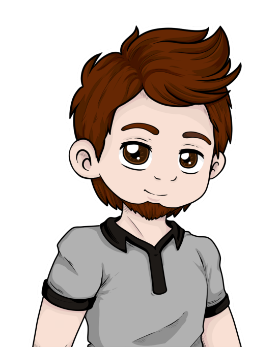

Je le sens pas…
Je le sens pas…
 Qu’est-ce qui pourrait mal se passer ? Le Doc nous a encore vol… trouvé une arme de notre pigeon de service ! Ils vont se ramener pour récupérer leur équipement, on les anéantit avant, et on part conquérir le monde ! Je ne vois pas où est le problème !
Qu’est-ce qui pourrait mal se passer ? Le Doc nous a encore vol… trouvé une arme de notre pigeon de service ! Ils vont se ramener pour récupérer leur équipement, on les anéantit avant, et on part conquérir le monde ! Je ne vois pas où est le problème !
 Ils arrivent ! Matéo planque toi ! Alexis ramène ton cul !
Ils arrivent ! Matéo planque toi ! Alexis ramène ton cul !
Je le sens vraiment pas…
Léopold, Ivan et Samy pénétrèrent dans le hall encore en ruine de l’aéroport, mais furent interrompus dans leur course par le Dr Friedmann.
 Vous voilà bande de bâtards ! Je vais vous renvoyer en taule en deux secondes !
Je ne crois pas, non !
Il saisit un appareil ressemblant à un gros fusil sorti d’un film de science-fiction, et le pointa sur Ivan.
Wow ! C’est quoi ça ?
C’est ce qui va réduire ton sac à foutre au silence pour toujours !
Dans un mouvement de ninja, Samy sauta et mis un violent coup de pied dans la tête du doc, ce qui fit tomber l’arme de ses mains et s’évanouit au sol. Le coup partit dans un bruit synthétique, et un énorme laser atterrit dans un mur, créant un trou béant.
Je le savais que ça ne marcherait pas…
Soudain, Aden et Antoine apparurent dans l’angle d’une porte encore debout.
Mais c’est… c’est pas possible ! Antoine tu étais… enfin, on t’a vu mourir !
 Et pourtant ! Je suis de retour haha !
Et pourtant ! Je suis de retour haha !
Ivan se jeta dans les bras ouverts d’Antoine et le serra tellement fort qu’il faillit tomber.
 Mais comment c’est possible ? Un mort c’est pas vivant de base !
Mais comment c’est possible ? Un mort c’est pas vivant de base !
Bravo abruti…
 C’est moi qui ai fait ça. Tout a commencé à la fin du tome 1, quand tout était rentré dans l’ordre. Tout le monde semblait heureux, mais vous aviez presque tous oublié Antoine qui c’était battu à nos côtés. Je me suis donc lancé dans une quête colossale ! Je suis parti à la recherche des sept boules de cristal.
C’est moi qui ai fait ça. Tout a commencé à la fin du tome 1, quand tout était rentré dans l’ordre. Tout le monde semblait heureux, mais vous aviez presque tous oublié Antoine qui c’était battu à nos côtés. Je me suis donc lancé dans une quête colossale ! Je suis parti à la recherche des sept boules de cristal.
Mais bien sûr ! Pourquoi j’y avais pas pensé ! Et t’a trouvé la lampe d’Aladin sur la route ? Je fais le vœu de savoir ce que t’as fumé !
 Tu vois une autre explication ? Moi j’y crois. En tout cas Aden tu es un héro !
Tu vois une autre explication ? Moi j’y crois. En tout cas Aden tu es un héro !
Effectivement ! Merci Aden !
Matéo apparu de derrière un pilier. Il sourit en voyant le visage de Léopold pâlir.
Oh merde…
Oh salut tu m’as manqué mec !
T’es con ou quoi ?
Bah quoi ?
Aden, tu nous explique ça ?
Mais… Je n’ai pas demandé ça…
Mais si ! Tu m’as sauvé ! C’était ton vœu non ?
Mais non ! J’ai demandé…
Tu as demandé de « ramener ceux qui sont partis au court de cette tragédie ». C’est ce qu’il a fait ! Et maintenant, vous m’excusez, mais j’ai à faire.
Il passa à côté d’Alexis qui s’était agenouillé devant Mathis, et ramassa la mystérieuse arme.
Il faudra vraiment que je pense à remercier Alan pour son Ufiawgun !
Si tu crois qu’on va te laiss…
Oh et puis merde, ferme là !
Il se retourna rapidement, et tira en plein sur Léopold. Lorsque le laser disparu, un oreiller était posé à la place de Léopold.
Oh mon dieu ! C’est pas possible !
Matéo tira Alexis vers lui, traînant Mathis avec.
On s’arrache ! On a encore du boulot.
Ils disparurent dans la nuit de ce vendredi soir, tandis que Samy, Ivan, Antoine et Aden se penchaient sur le coussin.
Eh mais…
Ivan pris l’oreiller et, en le retournant, il vit l’image d’un personnage en caleçon dessus. L’oreiller était assez long pour que le corps entier soit représenté, et il ne fallut que quelques secondes à Ivan pour reconnaître le personnage.
Léopold ! Il a été changé en waifu !
C’est un homme, c’est un husbando…
Mais ta gueule putain ! Si ça se trouve il souffre !
Il a plutôt l’air de dormir…
Ok, voilà ce qu’on va faire : Samy et Ivan, essayez de retrouver Alan. S’il a construit ce flingue bizarre, il sait sûrement comment supprimer ses effets. Antoine et moi, on va chercher du renfort, pour détruire une bonne fois pour toutes Amlaetxhis. Est-ce que vous êtes prêts à vivre la plus grande aventure de votre vie ?
Franchement bof…
Alors c’est parti !
Ils partirent chacun de leur côté, alors que la nuit tombait. Le lendemain, Antoine et Aden se retrouvèrent devant le lycée.
Du coup on commence par qui ?
Pour combattre Matéo il faut ceux qui le détestent le plus.
C’est à dire ?
C’est simple ! Plus on passe de temps avec Matéo, plus on le hait.
Tu les sorts d’où tes statistiques ? Et puis c’est débile, y a plein de gens qui l’apprécient.
En fait, il y a une deuxième possibilité. Si on ne déteste pas Matéo, on devient aussi fou que lui, et finalement il se sert de nous pour dévier la détestation des autres.
D’accord, mais du coup on va où ?
En S.I.
Ça y est t’es devenu fou…